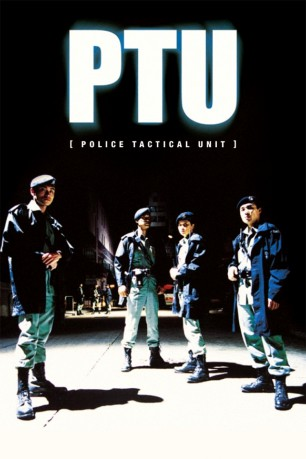

#6821 PTU - Police Tactical Unit
 
 IMDB-Wertung: 6.9 / 10
IMDB-Wertung: 6.9 / 10  Metascore: 0
Metascore: 0 
Dem redlich heruntergekommenen Detective Lo ist auf nächtlicher Streife von ein paar Streetgang-Mitglieder das Antlitz verbeult und die Waffe gestohlen worden. Ersteres wäre kein Problem, letzteres jedoch kostet in Hongkong die Karriere. Also versucht Lo mit allen Mitteln, spätestens bis zum Morgen wieder an die Waffe zu kommen. Hilfe erhält er dabei von Mike, dem Chef einer Vier-Mann Streife (PTU). Beiden bleibt nicht viel Zeit, zumal sich Gangster anschicken, mit Los Knarre Verbrechen zu begehen.
Jahr: 2003
Dauer: 87 Minuten
FSK: 16
Land: Hong-Kong Studio: MC-OneTonspuren:
Untertitel:
Auflösung: 1080p (1920x816) Größe: 10342 MB
Genre: Thriller, Drama, Krimi
Regisseur: Johnnie To
Drehbuch: Nai-Hoi Yau
Soundtrack:
Darsteller:
 Simon Yam als Sergeant Mike Ho
Simon Yam als Sergeant Mike Ho- Maggie Siu als Kat
 Suet Lam als Sergeant Lo Sa
Suet Lam als Sergeant Lo Sa- Ruby Wong als Inspector Leigh Cheng
- Raymond Ho-Yin Wong als Supervisor Wong
 Eddy Ko als Eye Ball
Eddy Ko als Eye Ball Courtney Wu als Bodyguard
Courtney Wu als Bodyguard- Hoi-Pang Lo als Bald Head
- Jerome Fung als Sergeant Fung
- Frank Michael Liu als Triad
 Chi Ping Chang als Insp. Chan's subordinate
Chi Ping Chang als Insp. Chan's subordinate- Pou-Soi Cheang als Undercover cop
- Moon-Yuen Cheung als PTU Orderly
- Chi-Shing Chiu als Ponnytail
- Wai-Kwok Kwok als
- Roderick Lam als Mike's team member
- Ching Ting Law als Robber in final shootout
- Tian-Lin Wang als Uncle Cheung
 Chi Wai Wong als Brother Hei
Chi Wai Wong als Brother Hei- Chi-Wang Wong als
 Wah Wo Wong als Bill
Wah Wo Wong als Bill- Ronald Yan als Senior Inspector Yu
- Bo Yuen als Robber in final shootout
- Ka Ting Lee als (uncredited
Datei: X:\HD-Eastern-Modern(N-Z)\PTU - Police Tactical Unit (2003, FSK16, 1920x816).mkv seit 30.08.2017
Festplatte: HD Eastern+Western
 Es gibt insgesamt 76 Filme in der Gruppe 'HD-Eastern-Modern(N-Z)'
Es gibt insgesamt 76 Filme in der Gruppe 'HD-Eastern-Modern(N-Z)'